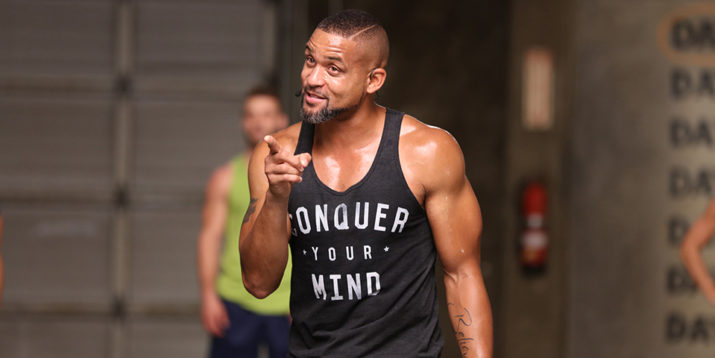
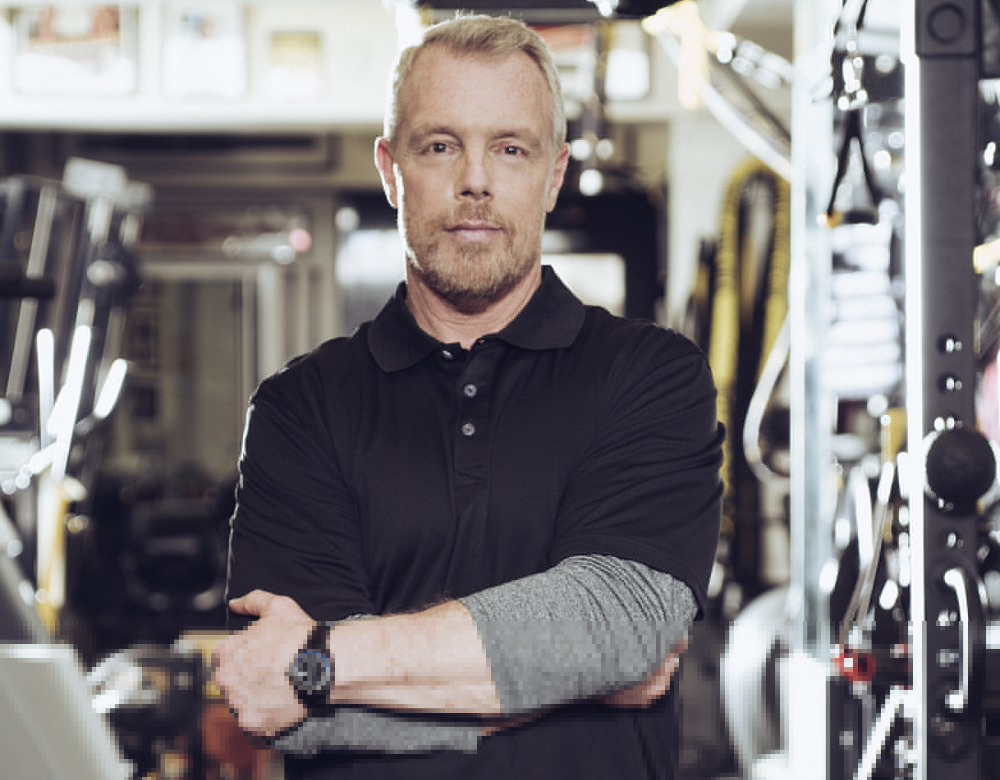
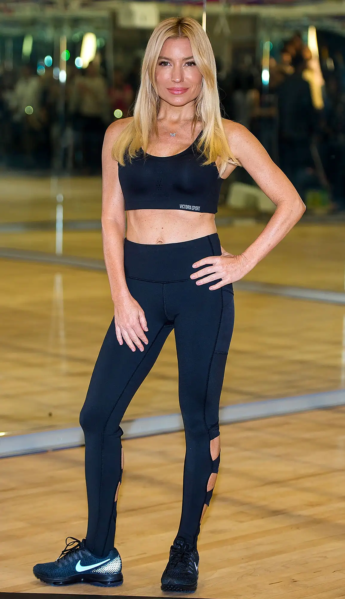

He is best known for his home fitness programs for adults and children which include T25, Insanity, Hip-Hop Abs Born: 2 May 1978 (age 44 years), Camden, New Jersey, United States
Height: 1.83 m
Nationality: American
Marriage location: New York, New York, United States
Children: Sander Vaughn, Silas Rhys
Education: Rowan University, Deptford High School
Siblings: Ennis Thompson

Shaun
He is also a speaker, creator of major fitness programs, and developer of fitness equipment with a focus on functional training.
Born: Houston, Texas, United States
Nationality: American
Education: Duke University
Spouse: Janet Crown Peterson (2007)
Children: 3
Siblings: Tor Peterson

Don-Saladion
a Bravo TV reality show.
She owns Sky Sport and Spa, a gym and spa in Beverly Hills, California.
Born: 17 August 1968 (age 54 years), Fairborn, Ohio, United States
Height: 1.72 m
Education: Fairborn High School
jackie-warner
Born: 3 March 1975 (age 47 years), Noblesville, Indiana, United States
Height: 1.52 m
Nationality: American
Education: The American Musical and Dramatic Academy
Parents: Diana Ephlin
Children: Penelope Mogol, Sam Anderson
Spouse: Matthew Mogol (m. 2011–2013), Eric Anderson (m. 1998–2008)
